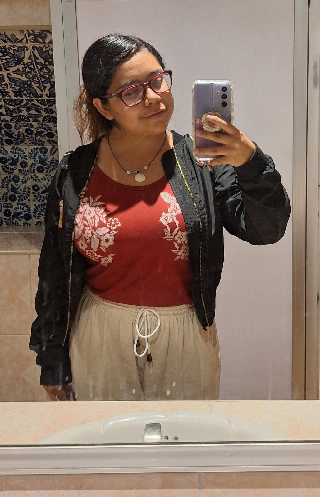
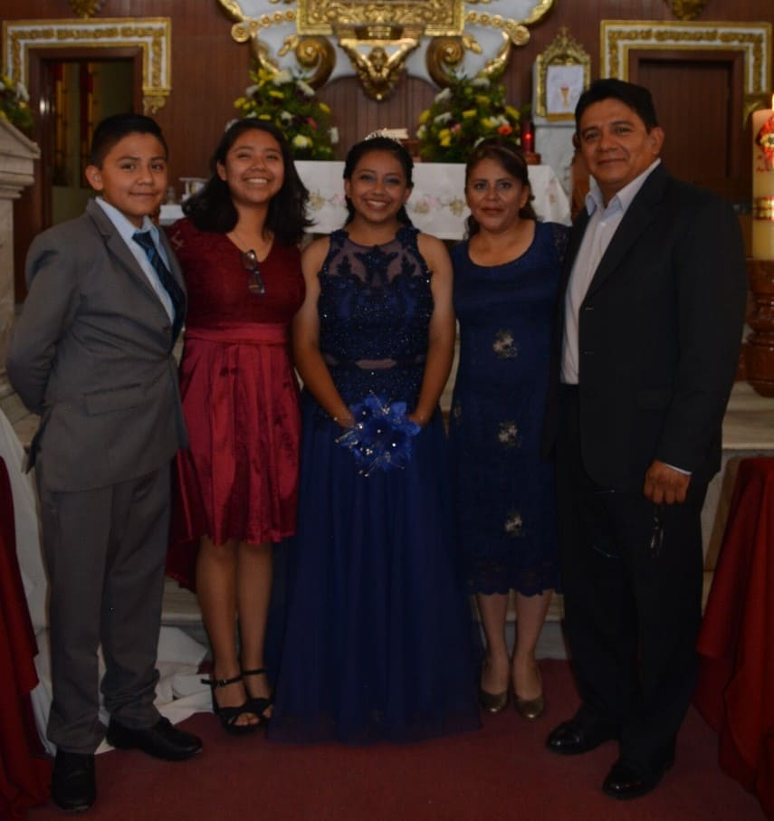

¿Quién soy yo?
Mi nombre es Karina Celis, soy una chica de 21 años actualmente y nací el 14 de enero en la ciudad de Puebla. Me encuentro estudiando el séptimo semestre de la carrera de Diseño Gráfico en la BUAP, mis colores favoritos son el lila, negro y el beige, me gusta mucho la música, los climas templados, ir a la playa, salir a andar en bici con mis hermanos, ver peliculas y series de comedia romántica sobre todo los k-dramas los cuales se han vuelto como una adicción.
De igual manera me encantan Los Juegos del Hambre y Harry Potter, soy fan de estos dos mundos de ficción desde que tengo 10 años; por otra parte, también me gustan los deportes, anteriormente llegué a practicar la natación, el fútbol, voleibol, handball y basquetbol; lamentablemente por diferentes circunstancias tuve que dejarlos pero aun tengo gusto por dichos deportes así como también por el tiro con arco.
Mi familia
Mi familia nuclear está conformada por cinco personas, mi mamá, mi papá, mi hermano y hermana y yo. Soy la hija mayor, mi hermana es la de en medio y mi hermano es el menor.
Mi mamá se llama Anneline, ella es ama de casa y vendedora de productos por catálogo (Natura), cuida de mi abuela y de mi tía materna llevándolas a sus terapias físicas y consultas con el médico. Por otro lado, mi papá se llama Felipe, el es trabajador en la CFE, el es quien provee económicamente a la familia y debido a sus horarios tan variados podemos pasar tiempo con el mayormente los fines de semana. Tanto mi mamá como mi papá son de la misma edad y se casaron en el 2001 cuando ambos acabaron la universidad.
En cuanto a mis hermanos, mi hermana Fatima es un año menor que yo, por lo que practicamente tenemos una relación más cercana, ella estudia artes plásticas igual en la BUAP y le gusta mucho los animes; por otro lado, tengo a mi hermano menor Elias, con el tengo una diferencia de cuatro años pero aun así nos llevamos muy bien, a él le gusta el basquetbol, casi todos los días llevaba su balón a la prepa para jugar, también le gusta los legos y quiere estudiar algo relacionado con el diseño y armado de autos.
Mis mascotas
Solin
Fue la primera mascota que tuvimos, lo adoptamos cuando estabamos en primaria, él era un perrito maltés de color negro y era pequeño, era muy juguetón pero se sabía comportar y no se salía de la casa, siempre se quedaba quieto cuando abriamos el saguan; lamentablemente por cuestiones de salud tuvimos que dormirlo en diciembre del 2020, fue muy triste su partida pero fue lo mejor ya que realmente ya no estaba teniendo una buena vida, ya no comía, solo dormía, estaba muy flaco y apenas y podía sostenerse para caminar.
Canelo
Él es el segundo perrito que tuvimos, Canelo es hijo de Solín y una perrita French que tiene una de mis tías, Canelo pudo convivir con Solin ya que cuando nació mi hermana le pidió a mi papá que la dejara quedarnos con el, constó convencerlo pero terminó accediendo. Recibió el nombre de Canelo porque cuando era cachorro su pelaje tenía el color como la canela, y al verlo mi Nana decidió llamarlo Canelo; él es un perrito de raza pequeña, es de color café clarito con algunos mechones blancos, cuando le crece el pelo se le hacen chinos y parece una oveja cafesita. Aunque a veces Solin y Canelo peleaban convivían muy bien y cuando Solín falleció Canelo se deprimió, por lo que a recomendación de la veterinaria, decidimos adoptar otro perrito.
Cala
Ella es la tercera mascota que tuvimos, Cala fue la perrita que adoptamos para que fuera compañera de Canelo y entre ambos cuidaran la casa. Ella es un pastor belga malinois, y si bien mis papás nunca quisieron perros grandes, ella fue la escepción; además mi mamá pensó que al tener una hembra no se pelearía con Canelo pero resultó ser lo contrario, desde que la tragimos pelean y se ladran mucho, pero con el tiempo hemos logrado que convivan más y hacerla entender que debe respetar a Canelo.